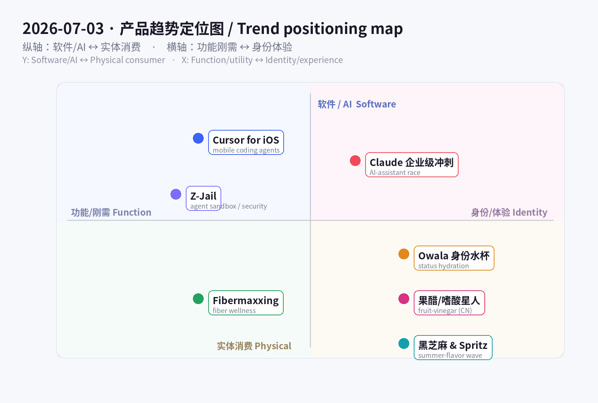
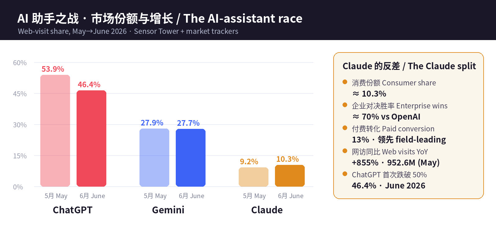

数据来源 / Sources: Hacker News（Show HN 7/2：Z-Jail 130KB 沙箱、PMB 记忆可观测、GolemUI、worker-owned co-ops 目录）、Product Hunt（Cursor for iOS、Acti 智能键盘）、Cursor 官方博客 + TechCrunch/TNW、Sensor Tower《State of AI 2026》+ 市场份额追踪（First Page Sage / Momentic / TechCrunch）、Google《Summergeist 2026》夏日趋势、The Vitamin Shoppe 2026 补剂趋势 + 纤维补剂市场报告、Amazon Movers & Shakers（Owala/Stanley）、小红书（#嗜酸星人、泰式奶茶、文旅兴趣出游）、a16z《Big Ideas 2026》。 方法 / Method: WebSearch + web_fetch 抓取公开数据。Sensor Tower / X / LinkedIn / 小红书 / Product Hunt 多为登录或客户端渲染，采用公开检索摘要、新闻与新闻稿替代。为保证每日新意，已排除 6/12–7/02 已深度分析过的产品（BrowserAct、Skybridge、AgentX、Propane、Upstream、Framer 3.0、Wispr Flow、Fundraisly、Slashy、Vokal、Goldfish、Minimi、观鸟/鸟门、Sibyl、World Model MCP、DAG 确定性 agent、mixfox、HackerNows、世界杯 blokecore、小红书「精准价值」等）。 免责声明 / Disclaimer: 本报告为趋势研究，非投资建议。融资/估值/份额/下载与收入为第三方公开披露或估算，可能随时变化。
一句话 / In one line： 7 月 2 日昨天 agent 长出了「记忆和脊椎」；今天 agent 长出了「手」和「笼子」——你能从口袋里指挥它写代码（Cursor for iOS），也能把它关进 130KB 的沙箱里安全地跑它写出来的代码（Z-Jail）；与此同时，AI 助手市场正式碎成「各占一格的专才」——ChatGPT 首次跌破 50%，而 Claude 用企业级精准度杀出一条增长曲线。 消费端则在上演另一场「身份战争」：fibermaxxing 把「补纤维」变成健身房级的自律符号，Owala 把水杯变成可收集的身份配饰，而从美国的 Hugo spritz、黑芝麻甜品到中国的果醋/嗜酸星人，夏日味觉集体转向「低度、有质感、会讲故事」。
In one line: Where July 2 was "agents grow a memory and a spine," today agents grow hands and a cage — you can now drive a coding agent from your pocket (Cursor for iOS) and safely run the code it writes inside a 130KB sandbox (Z-Jail) — while the AI-assistant market officially fractures into specialists: ChatGPT slips below 50% for the first time and Claude carves out a growth curve on enterprise precision. On the consumer side a second "identity war" is playing out: fibermaxxing turns "eat more fiber" into a gym-grade discipline signal, Owala turns a water bottle into a collectible identity accessory, and from US Hugo spritz + black-sesame desserts to China's fruit-vinegar / "sour-craving" wave, the summer palate shifts toward low-ABV, texture-forward, story-rich.
这两条线其实是同一件事的两面：当能力变得便宜且泛滥，价值就从「能不能做」上移到「在哪、由谁、以什么身份来做」。 开发侧，模型能力已接近商品化（a16z：AI 单位成本「比摩尔定律掉得还快」），于是竞争前移到载体（手机上的 agent）、安全边界（沙箱）与场景定位（企业 vs 消费）——Cursor 把「写代码」从「坐在桌前的岗位」变成「随时随地监督的任务」，Z-Jail 及一整簇沙箱（agentjail、Nono、Fence）在解决「agent 会自己写代码、那谁来兜底运行安全」，Claude 则用「70% 企业对决胜率 + 13% 付费转化」证明：在助手都会聊天之后，能赢的是「懂你工作」的那一个。
These two lines are two faces of one thing: when capability gets cheap and abundant, value moves from "can it be done" to "where, by whom, and under what identity it's done." On the dev side, model capability is near-commoditized (a16z: AI unit cost "falls faster than Moore's Law"), so competition moves to the surface (agents on your phone), the safety boundary (sandboxes), and positioning (enterprise vs consumer). Cursor turns coding from "a desk you sit at" into "a task you supervise from anywhere"; Z-Jail and a whole cluster of sandboxes (agentjail, Nono, Fence) answer "if the agent writes its own code, who guarantees it runs safely"; and Claude proves — with ~70% enterprise head-to-head wins and a field-leading 13% paid conversion — that once every assistant can chat, the winner is the one that understands your work.
消费侧同理：基础需求（喝水、吃饭）早已满足，于是溢价流向「身份与叙事」。 一支 Owala 卖的不是容量，是配色收藏与「我很自律」的人设；fibermaxxing 卖的不是麦麸，是「肠道健康 / 代谢 / 抗 GLP-1 副作用」的科学感自律；而 Hugo spritz、黑芝麻、果醋卖的不是解渴，是「懂行、克制、会拍照」的生活方式。功能是入场券，身份才是价格。
Same on the consumer side: basic needs (drink, eat) are long met, so the premium flows to identity and narrative. An Owala sells not capacity but collectible colorways and an "I'm disciplined" persona; fibermaxxing sells not bran but a science-flavored discipline ("gut health / metabolic / GLP-1 companion"); Hugo spritz, black sesame and fruit vinegar sell not thirst-quenching but a "in-the-know, restrained, photogenic" lifestyle. Function is the ticket; identity is the price.


五条最强信号 / Five strongest signals
Cursor for iOS（6/29 加入更新日志，原生 iOS App 公测）把当日最锋利的一刀切在「开发者的物理位置」上：过去你必须坐在电脑前才能用 agent 写代码；现在你在地铁上、在咖啡馆、在遛狗时，都能开一个云端 always-on agent，或远程操控正跑在你电脑上的 agent。它支持语音输入 + 斜杠命令，能读 UI 截图、错误日志、代码 diff，能在截图上直接批注，还能从手机上开/合并 PR。媒体的总结很到位：「编程正在变成一份你监督的工作，而不是一张你坐着的桌子。」 全付费档现已可用，即日起到 7/5 Composer 2.5 运行 75 折。
Cursor for iOS (added to the June 29 changelog; native iOS app in public beta) makes its sharpest cut on the developer's physical location. Before, you had to be at your desk to run an agent; now — on the subway, in a café, walking the dog — you can spin up an always-on cloud agent or remote-control an agent already running on your machine. It supports voice input + slash commands, can read UI screenshots, error logs and code diffs, annotate screenshots, and open/merge PRs from your phone. The press summary nails it: "coding is becoming a job you supervise, not a desk you sit at." Available on all paid plans; 75% off Composer 2.5 runs through July 5.
| 维度 Dimension | 分析 Analysis |
|---|---|
| 商业模式 Business model | 订阅（Cursor 付费档）+ 用量（Composer 2.5 runs）。移动端不是新收费点，而是提升在线时长与粘性的分发面。Subscription + usage; mobile deepens engagement, not a new SKU. |
| 核心功能 Core value | 手机上起云端/远程 agent、语音+斜杠、读截图/日志/diff、开合 PR。Cloud + remote agents, voice, review & merge from phone. |
| 成功因素 Success factors | 抓住「agent 长时间自主跑」催生的监督缺口——你不必守着电脑，但仍想随时插手。Fills the "supervise-from-anywhere" gap that autonomous agents create. |
| 细分市场 Niche | 移动端 AI 编程 / agent 监督（mobile agent control）。 |
| 目标受众 Audience | 已用 Cursor 的开发者、技术创始人、边通勤边推进的独立开发。Existing Cursor devs, technical founders, indie hackers. |
| 品牌设计 Brand | 延续 Cursor 极简黑白 + 「编辑器即 agent」定位；「build from anywhere」清晰有力。Minimal, "build from anywhere." |
| 产品数据 Data | 6/29 公测；全付费档可用；7/5 前 Composer 2.5 75 折；TechCrunch/TNW/Product Hunt 报道。Public beta 6/29. |
| 链接 Link | cursor.com/blog/ios-mobile-app · Product Hunt |
| 评论摘要 Reviews | 好评：「起个 agent 去睡觉，早上手机上 review」；质疑：付费档才可用、云端 agent 的额度/审阅上限、手机上审代码是否可靠。Praise for "kick off, sleep, review on phone"; concerns on paid-only + review limits. |
Z-Jail（Show HN，作者 Division-36）踩中了昨天「agent 长出脊椎」之后必然出现的问题：agent 现在会自己写代码、自己跑 shell，那谁来保证这些代码不把你的机器掀了？ Z-Jail 是一个约 130KB、纯 C99、零依赖的多层 Linux 沙箱：把 namespaces + pivot_root + seccomp-bpf + 能力剥离（capability dropping） 叠成 7 层防护，再配一个基于证据的「裁决引擎」（verdict engine）做可审计执行。它明确防御 chroot/mount/ptrace/socket/process_vm_writev 逃逸，以及 fork 炸弹与 CPU/内存耗尽。它不是孤例——同期一整簇 agent 沙箱（agentjail、内核级的 Nono、限制网络/文件系统的 Fence，加上 gVisor / microVM 路线）在 2026 年集中涌现，说明「安全执行」正从「大厂内部工具」变成人人要装的基础层。（注意其 Axiom Public License：预算 ≤ $1M 的独立研究者/小实验室免费，商用/政府/逆向需授权——这条许可本身会成为讨论焦点。）
Z-Jail (Show HN, by Division-36) lands on the problem that inevitably follows "agents grow a spine": agents now write their own code and run their own shells — so who guarantees that code won't wreck your machine? Z-Jail is a ~130KB, pure-C99, zero-dependency multi-layer Linux sandbox: it stacks namespaces + pivot_root + seccomp-bpf + capability dropping into 7 defense layers, plus an evidence-based "verdict engine" for auditable execution. It explicitly blocks escape via chroot/mount/ptrace/socket/process_vm_writev, plus fork bombs and CPU/memory exhaustion. It isn't a one-off — a whole cluster of agent sandboxes (agentjail, kernel-enforced Nono, network/FS-restricting Fence, plus the gVisor / microVM routes) surfaced in 2026, signaling that "safe execution" is moving from a big-company internal tool to a base layer everyone installs. (Note its Axiom Public License: free for independent researchers / small labs with budget ≤ $1M; commercial/government/reverse-engineering restricted — the license itself will be a talking point.)
| 维度 Dimension | 分析 Analysis |
|---|---|
| 商业模式 Business model | 开源/受限许可（Axiom）为主；变现路径大概率是商用/政府授权 + 企业支持。Restricted-license OSS; monetize via commercial/gov licensing + support. |
| 核心功能 Core value | 极小体积、零依赖的多层沙箱 + 可审计裁决引擎，安全跑不可信/agent 代码。Tiny, dependency-free multi-layer sandbox with auditable verdicts. |
| 成功因素 Success factors | 时机——「agent 写代码」把安全执行推成刚需；130KB/零依赖极易嵌入。Timing + trivially embeddable. |
| 细分市场 Niche | AI agent / CI / 不可信代码执行的安全沙箱。Sandboxing for agents, CI, untrusted code. |
| 目标受众 Audience | 做 agent 平台的团队、安全工程、跑不可信代码的基建方。Agent-platform builders, security eng, infra. |
| 品牌设计 Brand | 「Z-Jail = 监狱」意象直白；技术叙事（层数、逃逸向量）建立可信度。Blunt "jail" metaphor + technical credibility. |
| 产品数据 Data | Show HN（7/2）；130KB、C99、7 层、Linux 5.4+；同赛道 agentjail/Nono/Fence。130KB, 7 layers, Linux 5.4+. |
| 链接 Link | github.com/Division-36/Z-Jail · Nono (HN) |
| 评论摘要 Reviews | 关注点：seccomp-bpf/namespaces 是否够、与 gVisor/microVM 的取舍、许可证限制商用；赞其「小到能塞进任何 runtime」。Debate: enough vs gVisor/microVM; license friction; love the tiny footprint. |
这不是单一产品，而是当日最大的市场结构信号。据 Sensor Tower《State of AI 2026》与多家份额追踪：生成式 AI 应用使用时长同比翻倍（H1 2025 的 172 亿小时 → H1 2026 的 360 亿小时）；带「AI」的应用 H1 下载破 100 亿；AI 应用内购收入 H1 有望破 $40 亿（环比 +36%）。而竞争格局第一次去中心化：ChatGPT 网访份额 5 月 53.9% → 6 月 46.4%，首次跌破 50%；Gemini ~27.7%；Claude 消费份额 ~10.3%，看似小，却是增长最快的挑战者——网访 5 月 9.526 亿次、同比约 +855%、单季 +228%，且拿下约 70% 的企业对决胜率、13% 付费转化（全场第一）。结论很清晰：当每个助手都会聊天，胜负手变成「定位」——消费规模（ChatGPT）、生态分发（Gemini）、企业精准（Claude）、社交智能（Grok）、研究检索（Perplexity）各占一格。
Not a single product, but the day's biggest market-structure signal. Per Sensor Tower's State of AI 2026 and multiple share trackers: time spent on GenAI apps doubled YoY (17.2B hrs H1'25 → 36B hrs H1'26); "AI" apps cross 10B downloads in H1; AI in-app-purchase revenue on track to top $4B in H1 (+36% HoH). And the field decentralized for the first time: ChatGPT's web-visit share fell from 53.9% (May) to 46.4% (June) — below 50% for the first time; Gemini ~27.7%; Claude ~10.3% consumer share — small, yet the fastest-growing challenger (952.6M web visits in May, ~+855% YoY, +228% QoQ) that wins ~70% of enterprise head-to-heads and converts 13% to paid — best in the field. The takeaway: once every assistant can chat, positioning decides — consumer scale (ChatGPT), ecosystem distribution (Gemini), enterprise precision (Claude), social intelligence (Grok), research search (Perplexity).
| 维度 Dimension | 分析 Analysis |
|---|---|
| 商业模式 Business model | 订阅 + API + 企业合同；Claude 靠高付费转化(13%)与企业胜率弥补消费份额。Sub + API + enterprise; Claude leans on conversion + enterprise wins. |
| 核心功能 Core value | 高质量推理/编码/长上下文；企业级安全与可靠性是差异点。Reasoning/coding/long-context + enterprise trust. |
| 成功因素 Success factors | 不打「最大」，打「最懂工作」；企业采购看重可靠 > 声量。Win on "understands work," not "biggest." |
| 细分市场 Niche | 企业级 AI 助手 / 编码与知识工作。Enterprise assistant, coding & knowledge work. |
| 目标受众 Audience | 企业、开发者、专业知识工作者。Enterprises, developers, pro knowledge workers. |
| 品牌设计 Brand | 克制、安全、可信的定位，与「消费娱乐」拉开身位。Restrained, safety-forward, trust-first. |
| 产品数据 Data | 时长 172 亿→360 亿 hrs；ChatGPT 46.4%、Gemini 27.7%、Claude 10.3%；Claude +855% YoY、70% 企业胜率。 |
| 链接 Link | Sensor Tower State of AI 2026 · TechCrunch: below 50% |
| 评论摘要 Reviews | 行业讨论：「份额碎片化=市场成熟」；企业侧「Claude 更稳更可控」；消费侧仍是 ChatGPT 心智。"Fragmentation = maturity"; enterprise favors Claude's reliability. |
Fibermaxxing（把每日纤维摄入「拉满」）是当日最强的消费健康信号。Google《Summergeist 2026》显示 膳食纤维搜索创历史新高、「fibermaxxing」90 天 +115%；The Vitamin Shoppe 数据里，「psyllium husk（洋车前子壳）」站内搜索 +150%、纤维品类销售 年内 +20%；近 70% 美国人正主动增加纤维摄入。背后的叙事已从「减脂」升级为「肠道菌群 + 代谢健康 + GLP-1 减重药的营养搭档」——这正是它能从 TikTok 梗变成货架增长的原因。市场层面，纤维补剂 $47.6 亿(2026) → $75.5 亿(2033)，6.8% CAGR（另一口径 $168 亿→$384 亿，8.7% CAGR）；洋车前子壳是最大细分。主力品牌：Metamucil、Benefiber、Citrucel、Garden of Life、Renew Life。
Fibermaxxing (maxing out daily fiber) is the day's strongest consumer-health signal. Google's Summergeist 2026 shows dietary-fiber searches at an all-time high and "fibermaxxing" +115% in 90 days; at The Vitamin Shoppe, "psyllium husk" searches are +150% and fiber-category sales +20% YTD; nearly 70% of Americans are actively adding fiber. The narrative has upgraded from "weight loss" to "gut microbiome + metabolic health + the nutrition companion to GLP-1 drugs" — which is exactly why it jumped from TikTok meme to shelf growth. Market: fiber supplements $4.76B (2026) → $7.55B (2033), 6.8% CAGR (an alt read: $16.8B→$38.4B, 8.7% CAGR); psyllium husk is the largest segment. Lead brands: Metamucil, Benefiber, Citrucel, Garden of Life, Renew Life.
| 维度 Dimension | 分析 Analysis |
|---|---|
| 商业模式 Business model | 快消/补剂零售（DTC + 商超 + 电商）；高复购、订阅友好。CPG/supplement retail; high repeat, subscription-friendly. |
| 核心功能 Core value | 「简单、便宜、有科学感」的健康自律——纤维粉/胶囊/软糖。Cheap, science-flavored self-discipline. |
| 成功因素 Success factors | 蹭 GLP-1 与肠道健康大势 + TikTok 病毒式教育 + 低单价试错。GLP-1 + gut-health tailwind + TikTok. |
| 细分市场 Niche | 功能性营养 / 肠道 & 代谢健康。Functional nutrition, gut & metabolic. |
| 目标受众 Audience | Gen Z 健康党、GLP-1 用户、控糖控代谢人群。Gen Z wellness, GLP-1 users, metabolic-conscious. |
| 品牌设计 Brand | 从「药感」转向「食品/生活方式感」（软糖、气泡纤维饮）。From "medicine" to "food/lifestyle." |
| 产品数据 Data | 搜索 +115%；psyllium +150%；VS 纤维销售 +20% YTD；市场 $47.6 亿→$75.5 亿。 |
| 链接 Link | Google Summergeist 2026 · Nutraingredients: Vitamin Shoppe 2026 |
| 评论摘要 Reviews | 用户：「肠道顺了、饱腹感强」；专家提醒「加纤维要循序渐进 + 多喝水，否则胀气」。Users report satiety; experts warn "ramp slowly + hydrate." |
Owala（尤其 FreeSip）是 2026 年 TikTok 上最热的水杯品牌，正从 Stanley 手里接棒。FreeSip 有 10 万+ 五星评价，被反复夸「耐用、密封防漏、颜色可收集」；亚马逊 Prime Day 一度降到 $27。宏观层面，水杯市场过去一年近乎翻倍（2024 单年 +21%），且消费行为已变——人们不再只买一支，而是按穿搭/心情/场景收集多支。这类目早已从「功能」滑向「身份 + 时尚」：一支水杯是健身房的社交货币、是「我很自律、我很讲究」的可见符号。对品牌方，护城河是配色节奏（限定色/联名）+ UGC 口碑，而非杯体本身。
Owala (especially FreeSip) is 2026's hottest TikTok water-bottle brand, taking the baton from Stanley. FreeSip has 100k+ five-star reviews, repeatedly praised as "durable, leakproof, collectible colors"; it dipped to ~$27 on Amazon Prime Day. Macro: the water-bottle market nearly doubled over the past year (+21% in 2024 alone), and behavior shifted — people no longer buy one; they collect several by outfit/mood/occasion. The category long ago slid from "function" to "identity + fashion": a bottle is gym social currency, a visible "I'm disciplined, I have taste" signal. For brands, the moat is colorway cadence (limited drops/collabs) + UGC, not the vessel itself.
| 维度 Dimension | 分析 Analysis |
|---|---|
| 商业模式 Business model | DTC + 零售 + 亚马逊；靠限定配色/联名驱动复购与溢价。DTC + retail + Amazon; limited colorways drive repeat. |
| 核心功能 Core value | FreeSip 吸管+直饮二合一、密封防漏、颜色可收集。2-in-1 sip/straw, leakproof, collectible. |
| 成功因素 Success factors | 病毒式 UGC + 配色饥饿营销 + 「接棒 Stanley」的心智卡位。Viral UGC + scarcity colorways + timing. |
| 细分市场 Niche | 潮流保温水杯 / 生活方式配饰。Trend drinkware / lifestyle accessory. |
| 目标受众 Audience | Gen Z/千禧、健身与「that girl」人群、礼赠。Gen Z/Millennial, fitness, gifting. |
| 品牌设计 Brand | 高饱和撞色 + 可收集叙事 + 强社媒视觉。Saturated color-blocking, collectible story. |
| 产品数据 Data | FreeSip 10 万+ 五星；Prime Day $27；水杯市场近一年翻倍、2024 +21%。100k+ reviews, market ~2×. |
| 链接 Link | Owala 趋势 (Accio) · The Kitchn |
| 评论摘要 Reviews | 好评：颜色好看、真的不漏、通勤/健身首选；吐槽：清洗吸管麻烦、囤太多。Loved for color + leakproof; gripe: cleaning + overbuying. |
在小红书，#嗜酸星人 话题浏览量已达 6,040 万，把「酸」从一种口味变成一种人设。果醋饮销量同比 4 倍增长、柠檬饮持续走俏；与此并行的是泰式奶茶（话题 3.3 亿浏览）以「重茶 + 厚乳 + 香料」的复合口感全面开花。这不是孤立的饮品热点，而是小红书「兴趣圈层 + 精准价值」大势的味觉版：平台把流量倾斜给小众、真实、能解决具体问题（助消化、控糖、清爽、上镜）的内容，于是「酸口健康饮」这种低糖、有功能叙事、又足够出片的品类天然吃到红利。对品牌，机会在于把「酸」讲成健康+情绪价值（开胃、解腻、夏日清爽），并用素人种草而非硬广起量。
On Xiaohongshu, #SourCraving (#嗜酸星人) has 60.4M views, turning "sour" from a flavor into a persona. Fruit-vinegar drink sales grew 4× YoY, lemon drinks keep selling, and in parallel Thai milk tea (330M views) is blooming on a "strong tea + thick milk + spice" formula. This isn't an isolated beverage blip — it's the flavor edition of Xiaohongshu's "niche interest + precise value" shift: the platform tilts reach to niche, authentic, problem-solving content (digestion, sugar control, refreshment, photogenic), so a low-sugar, functionally-narrated, camera-ready category like "healthy sour drinks" naturally catches the wave. For brands, the opening is to frame "sour" as health + emotional value (appetite, cutting grease, summer refreshment) and scale via nano-creator seeding rather than hard ads.
| 维度 Dimension | 分析 Analysis |
|---|---|
| 商业模式 Business model | 快消饮品（果醋/柠檬饮/奶茶）+ 小红书种草电商闭环。Beverage CPG + Xiaohongshu social commerce. |
| 核心功能 Core value | 「酸」= 开胃/解腻/清爽 + 低糖健康叙事 + 出片。Sour = appetite/refresh + low-sugar + photogenic. |
| 成功因素 Success factors | 踩中「兴趣圈层 + 精准价值」流量倾斜；素人真实种草可信。Rides niche-value reach + authentic seeding. |
| 细分市场 Niche | 健康功能性饮品 / 风味饮。Functional-flavor beverages. |
| 目标受众 Audience | 小红书年轻女性、控糖/助消化人群、口味猎奇者。Young Xiaohongshu users, sugar-conscious, flavor-seekers. |
| 品牌设计 Brand | 清爽高饱和视觉 + 「星人」圈层身份标签。Fresh visuals + "-人 (tribe)" identity tags. |
| 产品数据 Data | #嗜酸星人 6,040 万浏览；果醋销量 +4×；泰式奶茶话题 3.3 亿。#SourCraving 60.4M; vinegar +4×. |
| 链接 Link | TopMarketing 爆款风味 · 2026 小红书八大趋势 (知乎) |
| 评论摘要 Reviews | 用户：「夏天喝果醋太开胃」「泰奶戒不掉」；关注点：含糖量、真假发酵果醋。Praise appetite/refresh; watch sugar + real fermentation. |
Google《Summergeist 2026》给出了一幅清晰的西方夏日味觉图：「how to make a hugo spritz at home」暴涨 +2,200%、「what goes in an aperol spritz」成突破性搜索；黑芝麻创历史级热度（延伸到黑芝麻冰淇淋、黑芝麻曲奇）；frozen yogurt nyc +120%；hojicha 拿铁、horchata、冷萃 einspänner 咖啡霸榜；连冰镇红酒 / Sancerre 搜索都「冲破屋顶」。共同母题是「低度数、有质感、克制而讲究」——大酒被低 ABV 气泡饮取代，甜品从「甜腻」转向「烘香/坚果/微苦」的成人味，饮品越来越强调口感层次与仪式感。这与东方的果醋/泰奶殊途同归：夏天的味觉正在集体「成熟」，从刺激转向细腻。
Google's Summergeist 2026 paints a clear Western summer palate: "how to make a hugo spritz at home" +2,200%, "what goes in an aperol spritz" a breakout; black sesame at record heat (extending to black-sesame ice cream and cookies); frozen yogurt nyc +120%; hojicha lattes, horchata and cold-brew einspänner dominating; even chilled reds / Sancerre searches "through the roof." The shared motif is "low-ABV, texture-forward, restrained-yet-refined" — big liquor gives way to low-ABV spritzes, desserts move from cloying to "toasty/nutty/faintly bitter" grown-up flavors, and drinks emphasize texture and ritual. It converges with the East's fruit-vinegar / Thai-tea wave: the summer palate is collectively maturing — from stimulation to nuance.
| 维度 Dimension | 分析 Analysis |
|---|---|
| 商业模式 Business model | 餐饮/零售/DTC 风味创新 + RTD 低度气泡饮；靠「新风味 SKU」拉客。Foodservice/RTD low-ABV; new-flavor SKUs. |
| 核心功能 Core value | 低度、层次感、成人化风味（spritz/黑芝麻/hojicha）。Low-ABV, layered, grown-up flavors. |
| 成功因素 Success factors | 健康+克制的饮酒观 + 出片 + 「懂行」身份感。Mindful drinking + photogenic + connoisseur signal. |
| 细分市场 Niche | 低 ABV 气泡饮 / 高级感风味甜品。Low-ABV spritz / premium-flavor desserts. |
| 目标受众 Audience | 都市千禧/Gen Z、mindful drinking、美食内容党。Urban Millennial/Gen Z, mindful drinkers, foodies. |
| 品牌设计 Brand | 清爽通透视觉 + 欧式/东方「高级感」叙事。Airy visuals + Euro/East "premium" story. |
| 产品数据 Data | Hugo spritz +2,200%；froyo NYC +120%；黑芝麻/hojicha/Sancerre 突破性搜索。 |
| 链接 Link | Google Summergeist 2026 · Yahoo: summer food & drink 2026 |
| 评论摘要 Reviews | 用户：「Hugo 比 Aperol 更清爽」「黑芝麻万物皆可」；关注点：低度≠低糖、风味疲劳。"Hugo > Aperol for refresh"; watch sugar + flavor fatigue. |
| 产品/趋势 Product | 类别 Category | 商业模式 Model | 细分市场 Niche | 目标受众 Audience | 关键数据 Key data | 链接 Link |
|---|---|---|---|---|---|---|
| Cursor for iOS | 开发 Dev | 订阅+用量 Sub+usage | 移动 agent 监督 Mobile agent control | Cursor 开发者/创始人 Devs, founders | 6/29 公测；全付费档；7/5 前 75 折 | link |
| Z-Jail | 开发/安全 Dev/Sec | 受限许可 OSS + 授权 | agent 沙箱 Agent sandbox | 平台/安全/基建 Platform, security | 130KB · C99 · 7 层 · Linux 5.4+ | link |
| Claude / AI 助手战 | 应用/宏观 Apps/Macro | 订阅+API+企业 Sub+API+ent | 企业级助手 Enterprise assistant | 企业/开发者 Enterprises, devs | 消费 10.3% · 企业胜率 ~70% · +855% YoY | link |
| Fibermaxxing | 消费健康 Consumer health | 补剂零售 Supplement retail | 功能营养 Functional nutrition | Gen Z/GLP-1 用户 | 搜索 +115% · psyllium +150% · $47.6 亿→$75.5 亿 | link |
| Owala | 消费品 Consumer goods | DTC+零售 DTC+retail | 潮流水杯 Trend drinkware | Gen Z/健身/礼赠 | 10 万+ 五星 · Prime Day $27 · 市场近 2× | link |
| 果醋/嗜酸星人 | 消费食品·中国 Food·CN | 饮品+种草电商 CPG+social | 功能风味饮 Functional flavor | 小红书年轻女性 | #嗜酸星人 6,040 万 · 果醋 +4× | link |
| 黑芝麻 & Spritz | 消费食品·全球 Food·Global | RTD/餐饮 RTD/foodservice | 低 ABV & 高级风味 Low-ABV & premium | 都市千禧/Gen Z | Hugo spritz +2,200% · froyo NYC +120% | link |
A. 能力商品化 → 价值上移到「载体、边界、定位」/ As capability commoditizes, value moves to surface, boundary, positioning. 模型本身越来越像水电（a16z：单位成本比摩尔定律掉得快），于是 Cursor 争「在哪用（手机）」、Z-Jail 争「怎么安全地用（沙箱）」、Claude 争「为谁用（企业）」。不要在能力上卷，要在「使用的语境」上卡位。 Compete on the context of use, not raw capability.
B. agent 的每一步「进化」都立刻催生配套刚需 / Every agent capability instantly creates an adjacent must-have. 昨天 agent 有了记忆/脊椎，今天就冒出「手」（移动操控）与「笼子」（安全沙箱）。规律：当自主性↑，监督面与安全面同步变成新赛道。 Autonomy up ⇒ supervision + safety become new categories.
C. 消费端全线是「身份战争」/ Consumer trends are identity wars. fibermaxxing（自律人设）、Owala（收集/讲究人设）、嗜酸星人（圈层标签）、spritz/黑芝麻（懂行克制）——卖的都不是功能，而是「我是谁」的可见符号。 功能是入场券，身份定价。Function is the ticket; identity sets the price.
D. 味觉全球共振：从「刺激」转向「细腻+功能」/ A global palate shift: from stimulation to nuance + function. 西方低 ABV spritz/黑芝麻、东方果醋/泰奶，母题一致——低糖低度、有层次、能讲健康故事、还要出片。 Low-sugar/low-ABV, layered, health-narrated, photogenic.
E. 分发即护城河 / Distribution is the moat. 开发侧靠「装进现有工作流」（Cursor 手机、Z-Jail 塞进任何 runtime），消费侧靠「TikTok/小红书素人种草 + 限定色/新风味节奏」。产品好只是必要条件；能嵌进用户已有的场景与内容流，才是增长。 Fit into existing workflows and content feeds.
共性一句话 / The pattern in one line： 当「做得到」变得便宜，赢家都在争「在什么语境、以什么身份、被谁在什么场景里用」——开发侧卡载体与安全，消费侧卡身份与叙事。
When "it can be done" gets cheap, winners fight over context, identity, and moment-of-use — devs claim the surface and the safety layer; consumers are sold identity and narrative.
报告结束 · End of report — 2026-07-03